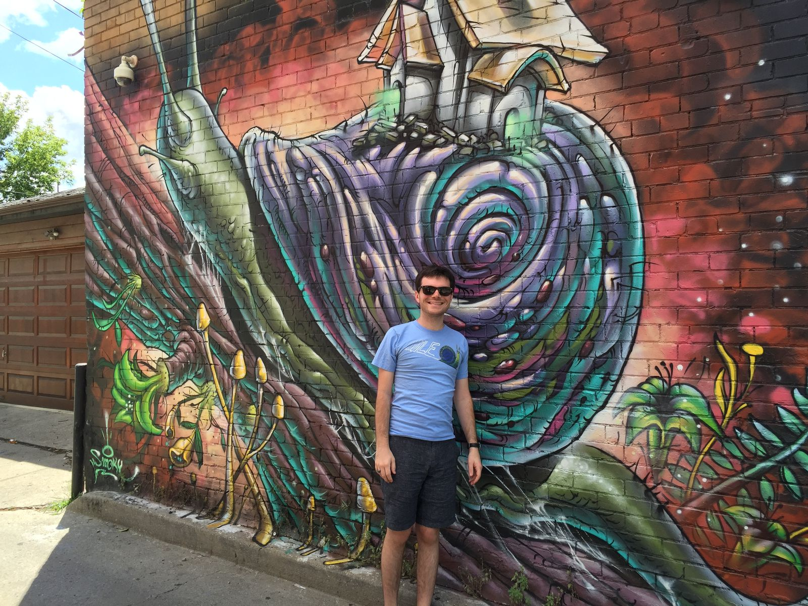

Welcome
Hello internet friends,
I am about to embark on an adventure.
For the past seven years, I have been working as a mechanical engineer at Formlabs, a Boston-based 3D printer manufacturer. I have watched us grow from 5 employees to 500, from a small startup to a leader in the industry. After seven years of work, I have been given the opportunity to take seven weeks off. During this time, I will be heading to the west coast, driving from San Diego to Seattle, seeing friends and family along the way. Intentionally, I am planning as little as possible. I am writing this blog, in part, to document my travels.
Just as importantly, I am writing this blog to reflect on my travels. By taking a step back and putting my thoughts into words, I can look back on what is important and what is not, all the while becoming a better writer. That sounds pretty good to me.
What can you expect from this blog? Well, not much, to be honest. This blog is mostly for me and not for you. I can't promise you great photos, because I am not a great photographer. I can promise you that the photos will be at least pretty OK and not have any stray fingers obscuring the lens or motion blur from moving the camera while taking the photo. I can't promise you useful travel tips, because my traveling tends to be happy-go-lucky. I don't tend to remember details on where exactly I went or what exactly I did. But I can craft a good story with some feeling. And I'll probably make you laugh. At least there's that.
I take off to the west coast next Thursday. In the time between now and then, I hope to share a bit more background—about my career, about this journey, and about what the deal is with all the snails.
So if you're interested in following along, be sure to like and subscribe—which I think means adding this URL to your RSS feed. Do people still use RSS feeds?
OK before I end, I'll add a picture. I hear pictures are pretty important for blogging.
